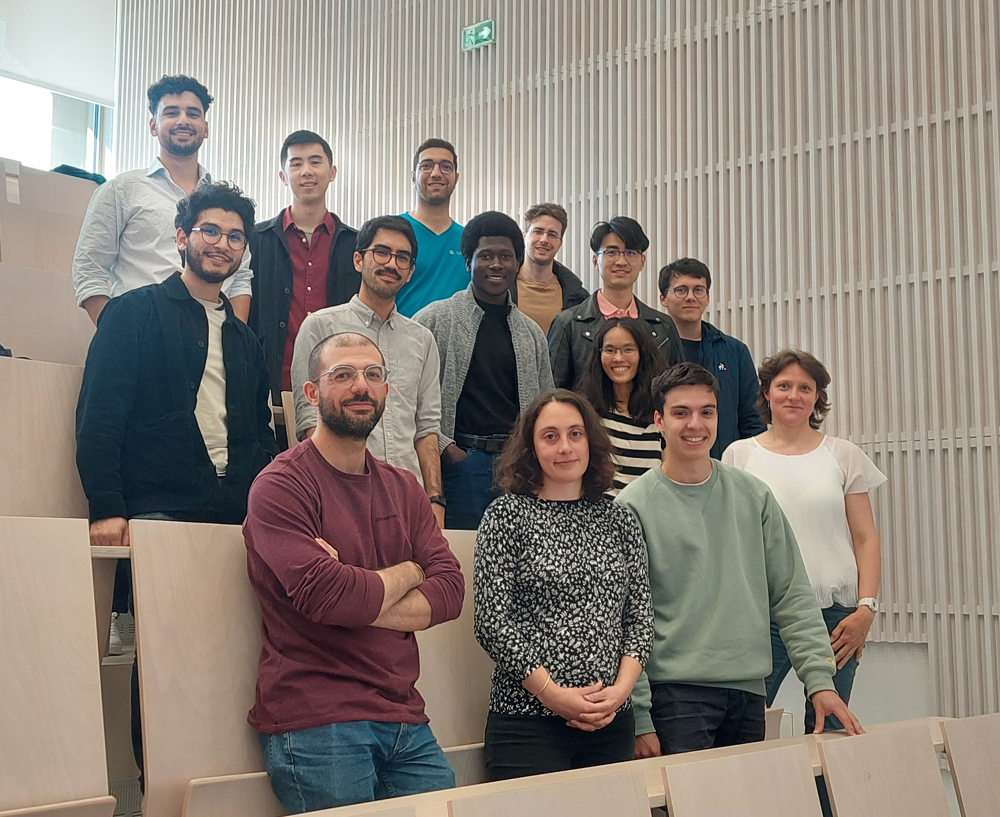

France PhD Workshop on Information Theory
Organisation
Place: Telecom Paris (Amphi 3), 19 place Marguerite Perey, 91120 Palaiseau, France
Date: Friday 7 June 2024
Organizer: Michèle Wigger (michele.wigger@telecom-paris.fr)
Programme
Zoom Link: Expired
9h30 - 10h10
Speaker: Julien Beguinot (Telecom Paris)
Title: Guessing for Side-Channel Attacks, Slides
10h10 - 10h50
Speaker: Cecile Bouette (ENSEA Cergy)
Title: Covert Communication Over Additive-Noise Channels, Slides
10h50-11h20: Coffee Break
11h20 - 12h00
Speaker: Shashwat Mishra (INSA Lyon/Nokia)
Title: Spatial Continuum Channels
12h00 - 12h40
Speaker: Giuseppe Serra
Title: Computational Methods for a Class of Constrained Rate-Distortion Functions, Slides
12h40-14h00: Lunch break
14h00 - 14h40
Speaker: Jiahui Wei (INSA Rennes/IMT Atlantique)
Title: Information Theoretic Analysis and Coding Scheme for Learning : Regression and More, Slides
14h40 - 15h20
Speaker: Ismaila Salihou-Adamou (IMT Atlantique)
Title: Error Exponent Bounds and Practical Short-Length Coding Schemes for Distributed Hypothesis Testing (DHT), Slides
15h20 - 16h20: Poster Session and Coffee Break
Presenters: Henrique Miyamoto (Centrale-Supelec), Poster; Raymond Zhang (Centrale-Supelec), Poster; Abdelaziz Bounhar (Telecom Paris), Poster; Ahmad Tanha (Eurecom), Poster; Simon Trottier (INSA Lyon); Kevin Zagalo (INRIA Lyon), Poster; Nicolas Legouic (Telecom Paris), Poster;
16h20 - 17h00
Speaker: Romain Chor (Huawei)
Title: Distributed Statistical Learning Algorithms, Slides
17h00 - 17h40
Speaker: Hui-An Shen (Uni Berne/Telecom Paris)
Title: Optimal Activation Functions via Causal Wyner-Ziv Coding, Slides
